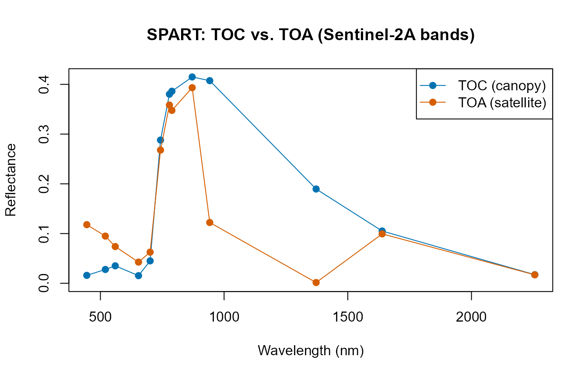

03. SPART: Soil-Plant-Atmosphere Radiative Transfer
03-spart.Rmd
library(ToolsRTM)Tutorials 01-02 stopped at top-of-canopy (TOC) reflectance – what a
sensor would see immediately above the canopy, with no atmosphere in the
way. SPART() goes one step further: soil, canopy, AND
atmosphere, together, giving top-of-atmosphere (TOA) reflectance – what
a real satellite actually measures. It deserves its own page rather than
a paragraph inside a leaf/canopy comparison, because it represents a
more complete modelling chain, not just another canopy option.
Atmosphere
|
Incoming radiation
|
Soil ---------> Vegetation canopy
|
Canopy reflectance
|
Atmosphere
|
Top-of-atmosphere signalPROSPECT + fourSAIL SPART
-------------------- --------------------
Leaf Atmosphere
| |
Canopy Leaf + Canopy + Soil
| |
TOC reflectance Atmosphere
|
TOA observationSPART couples three sub-models: BSM (Brightness-Shape-Moisture) for soil, fourSAIL for the vegetation canopy, and SMAC for atmospheric effects – the same three-model architecture SPART’s own reference implementation (Yang et al. 2020) uses.
3.1 Configure SPART
Inputs fall into five physical domains. inputsSPART (a
getLUT()-ready table, same pattern as
inputsPROSAIL) already groups them:
| Domain | Example columns | Notes |
|---|---|---|
| Leaf |
Cab, Car, Anth,
LMA, EWT, N, … |
Same as PROSPECT/fourSAIL (Tutorial 02) |
| Canopy structure |
LAI,
LIDFa/LIDFb/TypeLidf,
hspot
|
Same as fourSAIL |
| Soil | psoil |
See the important caveat in Section 3.3 below |
| Geometry |
tts, tto, psi
|
Sun zenith, view zenith, relative azimuth |
| Atmosphere |
Pa, aot550, uo3,
uh2o, alt_m, Pa0
|
Air pressure, aerosol optical thickness, ozone, water vapour, altitude |
Full argument documentation lives at ?SPART – this page
focuses on how the pieces fit together, not an exhaustive parameter
list.
LUT <- as.data.frame(getLUT(inputs = ToolsRTM::inputsSPART, nLUT = 5, setseed = 1))
# inputsSPART only ships PROSPECT-PRO/-D columns -- add what other leaf
# models need too (same requirement as foursail()/SPART() itself).
LUT$Cs <- 0; LUT$fqe <- 0.01; LUT$Cx <- 0
LUT$cell.d <- 40; LUT$inter.c <- 0.045; LUT$baseline.abs <- 0.0006
LUT$leaf.thick <- 1.6; LUT$albino.abs <- 0; LUT$lign.cell <- 2; LUT$Nitrogen <- 1
# A realistic, sea-level, clear-sky atmosphere for the worked example below
# (getLUT()'s own default sampling range for the atmosphere columns is wide
# enough to occasionally draw physically implausible combinations -- see
# the note at the end of Section 3.2).
LUT$Pa <- 1000; LUT$aot550 <- 0.3246; LUT$uo3 <- 0.3480; LUT$uh2o <- 1.4116
LUT$alt_m <- 0; LUT$Pa0 <- 10003.2 Run a baseline simulation
sim <- suppressWarnings(SPART(inputLUT = LUT[1, ], CanopyModel = "fourSAIL",
LeafModel = "PROSPECT-PRO",
sensor.i = ToolsRTM::Sentinel2A.MSI,
rsoil = NULL, get.plots = FALSE))
names(sim$output) # wave, rad.toa, rfl.toa, rfl.toc, rfl.toc.BRDF -- already at Sentinel-2A's own bands
#> [1] "wave" "rad.toa" "rfl.toa" "rfl.toc" "rfl.toc.BRDF"Unlike foursail(), SPART returns output already
convolved to the chosen sensor’s bands (sensor.i) – there
is no separate “simulate native, then convolve” step (Tutorial 07 covers
convolution for foursail()/inform() output,
which stays at 1nm resolution).
plot(sim$output$wave, sim$output$rfl.toc.BRDF, type = "o", pch = 19, col = "#0072B2",
ylim = c(0, max(sim$output$rfl.toc.BRDF, sim$output$rfl.toa)),
xlab = "Wavelength (nm)", ylab = "Reflectance", main = "SPART: TOC vs. TOA (Sentinel-2A bands)")
lines(sim$output$wave, sim$output$rfl.toa, type = "o", pch = 19, col = "#D55E00")
legend("topright", c("TOC (canopy)", "TOA (satellite)"), col = c("#0072B2", "#D55E00"), pch = 19, lty = 1)
The dip near 942nm and the near-total collapse near 1372nm are real
atmospheric water-vapour absorption bands – present in the TOA curve but
absent from TOC, exactly what real atmospheric correction has to deal
with. A note on getLUT()’s atmosphere
sampling: at the wide default ranges inputsSPART
samples from, some random rows combine a high aot550
(aerosol loading) with a high alt_m (altitude) – a
combination SMAC’s atmospheric correction doesn’t handle gracefully,
producing negative (physically meaningless) TOA reflectance. Always
sanity-check range(sim$output$rfl.toa) after a random draw;
the fixed, realistic sea-level clear-sky atmosphere set in Section 3.1
above avoids this for the rest of this page.
3.3 Soil contribution
Physically, a sparse canopy should let more soil show through than a
dense one. Important caveat, found while building this
page: the psoil column documented in
inputsSPART/?SPART only has an effect when you
pass your own rsoil – SPART()’s built-in BSM
soil path (triggered whenever rsoil = NULL) hardcodes its
own soil-moisture constants internally and never reads
inputLUT$psoil at all, so sweeping psoil alone
with rsoil = NULL produces byte-identical output regardless
of its value. The demonstration below uses an explicit
rsoil (as foursail() already requires in
Tutorials 01-02) to sidestep this and show the real physics:
soil_dark <- rep(0.08, 2001) # dark/wet-looking soil
soil_bright <- rep(0.30, 2001) # bright/dry-looking soil
soil_effect <- function(lai) {
row_i <- LUT[1, ]; row_i$LAI <- lai
d <- suppressWarnings(SPART(inputLUT = row_i, CanopyModel = "fourSAIL", LeafModel = "PROSPECT-PRO",
sensor.i = ToolsRTM::Sentinel2A.MSI, rsoil = soil_dark, get.plots = FALSE))
b <- suppressWarnings(SPART(inputLUT = row_i, CanopyModel = "fourSAIL", LeafModel = "PROSPECT-PRO",
sensor.i = ToolsRTM::Sentinel2A.MSI, rsoil = soil_bright, get.plots = FALSE))
mean(b$output$rfl.toc.BRDF) - mean(d$output$rfl.toc.BRDF)
}
cat("Mean TOC reflectance shift, dark vs. bright soil:\n")
#> Mean TOC reflectance shift, dark vs. bright soil:
cat(" Sparse canopy (LAI=0.5):", round(soil_effect(0.5), 4), "\n")
#> Sparse canopy (LAI=0.5): 0.1318
cat(" Dense canopy (LAI=6): ", round(soil_effect(6), 4), "\n")
#> Dense canopy (LAI=6): 0.0013Low LAI High LAI
| |
large soil contribution small soil contribution
| |
stronger background effect canopy-dominated signalConfirmed: soil brightness shifts the sparse-canopy signal by roughly
70x more than the dense-canopy signal – once the canopy closes, soil
brightness barely reaches the sensor. This page used two fixed flat
rsoil spectra to isolate the LAI effect; for a
physically-realistic moisture-driven soil spectrum instead of
an arbitrary brightness value, see
ToolsRTM::get.marmit.rsoil() (MARMIT, Bablet et al.) – it
plugs into
foursail()’s/foursail2()’s/inform()’s
own rsoil argument the same way, and into
SPART()’s here.
3.4 Atmospheric contribution
Section 3.2’s plot already showed this directly: compare
rfl.toc.BRDF (canopy-level, no atmosphere) against
rfl.toa (after the SMAC atmosphere layer) for the same
simulation. The progression is surface signal -> atmosphere ->
sensor-observed signal, and the two curves diverge most exactly where
atmospheric gases absorb strongly (water vapour, ozone), not uniformly
across the spectrum.
3.5 Geometry
tts (sun zenith), tto (view zenith), and
psi (relative azimuth) all feed into fourSAIL’s BRDF term
inside SPART, the same way they do in Compute_BRF()
(Tutorial 01) – this is what makes reflectance direction-dependent
rather than a single fixed number per surface:
for (tts_i in c(10, 30, 50)) {
row_i <- LUT[1, ]; row_i$tts <- tts_i
s_i <- suppressWarnings(SPART(inputLUT = row_i, CanopyModel = "fourSAIL", LeafModel = "PROSPECT-PRO",
sensor.i = ToolsRTM::Sentinel2A.MSI, rsoil = NULL, get.plots = FALSE))
cat("Sun zenith (tts) =", tts_i, "deg -> mean TOC BRDF:", round(mean(s_i$output$rfl.toc.BRDF), 4), "\n")
}
#> Sun zenith (tts) = 10 deg -> mean TOC BRDF: 0.1814
#> Sun zenith (tts) = 30 deg -> mean TOC BRDF: 0.1864
#> Sun zenith (tts) = 50 deg -> mean TOC BRDF: 0.1917Reflectance rises with sun zenith angle here (lower sun, longer optical path through the canopy, more multiple scattering reaching the sensor before absorption) – this direction-dependence IS what BRDF means; a Lambertian (direction-independent) assumption would miss it entirely.
3.6 SPART and satellite observations
Because SPART already outputs at a chosen sensor’s bands, moving from
simulation to a realistic EO-like observation needs no separate
convolution step – just pick sensor.i. Only sensors SPART
actually supports (bundled objects in ToolsRTM) are listed
here:
spart_sensors <- c("LANDSAT4.TM", "LANDSAT5.TM", "LANDSAT7.ETM", "LANDSAT8.OLI",
"Sentinel2A.MSI", "Sentinel2B.MSI", "Sentinel3A.OLCI",
"Sentinel3B.OLCI", "TerraAqua.MODIS")
s_modis <- suppressWarnings(SPART(inputLUT = LUT[1, ], CanopyModel = "fourSAIL", LeafModel = "PROSPECT-PRO",
sensor.i = ToolsRTM::TerraAqua.MODIS, rsoil = NULL, get.plots = FALSE))
cat("Sentinel-2A bands:", length(sim$output$wave), " -- MODIS bands:", length(s_modis$output$wave), "\n")
#> Sentinel-2A bands: 13 -- MODIS bands: 20Vegetation traits
+
Canopy structure
+
Soil
+
Atmosphere
|
v
SPART
|
v
Spectral observation, already at sensor bands
|
v
Sentinel-2 / Landsat / MODIS / ...3.7 SPART for inversion
SPART slots into the exact same hybrid-inversion framework the rest
of this series builds (Tutorials 10-13): simulate a LUT with
SPART() instead of foursail(), and everything
downstream (train/test split, get.inversion(),
getMLmodel()) is unchanged, since it only ever depends on a
table of (sensor-band reflectance, trait) pairs regardless of which
model produced it.
Parameter LUT
|
v
SPART simulations (already at sensor bands)
|
v
Synthetic EO training dataset
|
v
ML inversion
|
v
Vegetation traitsNot developed further here – see Tutorial 11 for the full framework.
Take-home message
Use plain
foursail()/foursail2()/inform()
(Tutorials 01-02, 04) when the question is about the canopy or leaf
itself and TOC reflectance is enough – it’s simpler, faster, and every
model in this package other than SPART works that way. Reach for
SPART() specifically when the question involves what a
satellite actually measures at TOA (atmospheric correction studies,
comparing simulations directly against uncorrected satellite products,
or any workflow where the atmosphere’s own contribution matters) – the
extra atmosphere/soil-BSM machinery is not needed otherwise.